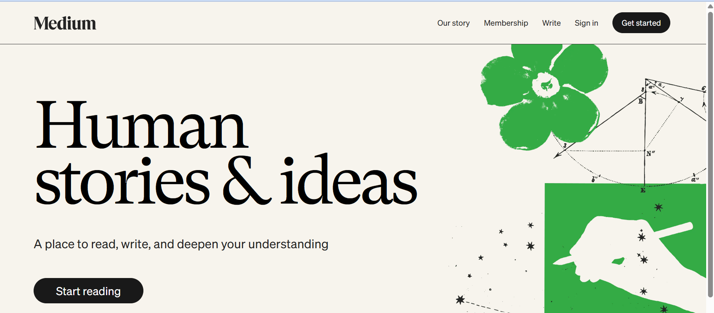

Landing pageMedium Landing Page
A landing page project focused on presenting Medium in a clear, inviting way.
- Web design
- Landing page
Developer Portfolio
I’m Joseph Arthur, a final-year BSc Actuarial Science student at the University of Cape Coast in Ghana and a developer based in Takoradi. Explore my work across landing pages, university websites, and interface prototypes.

Based in
Web projects and interface prototypes.
Project work across the web
What I do
Clear, engaging pages designed to introduce a product or idea.
Websites created for communities, organizations, and practical needs.
Early interface concepts for exploring the layout and experience of a digital product.
Featured work

Landing pageA landing page project focused on presenting Medium in a clear, inviting way.
An association dues website for ASSAG UCC.
A prototype exploring an interface for IC Wealth.